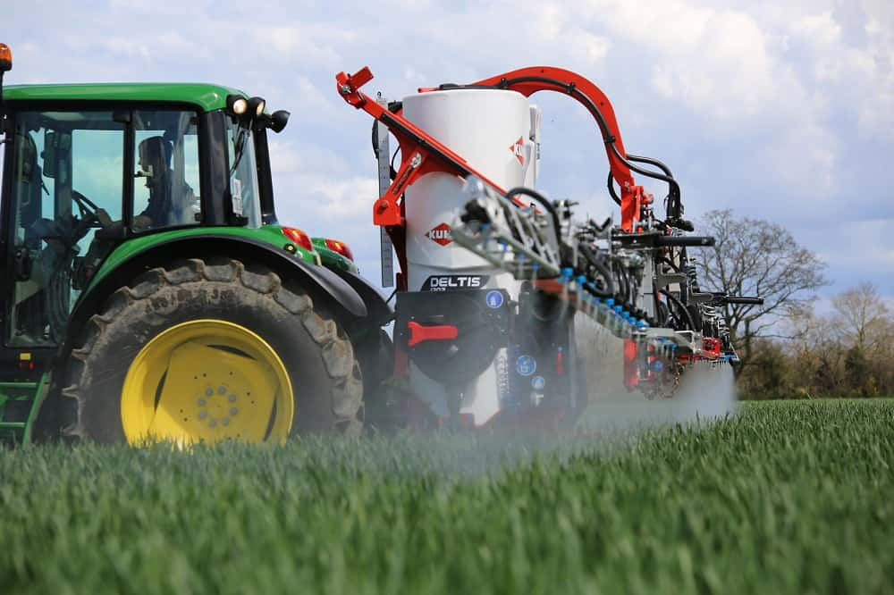
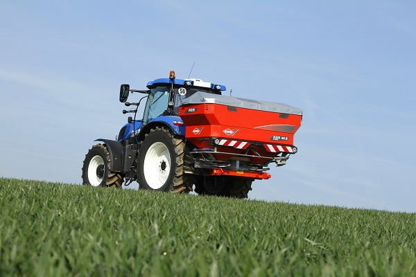

Kæmpe Array af KUHN Kit på Royal Welsh Show
KUHN Farm Machinery will be displaying a wide range of grassland and livestock equipment at this year’s Royal Welsh Show, Builth Wells, from 24th to 27th July, with everything from fertiliser spreaders, mower conditioners, rakes and balers to mixer wagons, ploughs and sprayers on display.The following KUHN machines, amongst others, will be on display:
DELTIS 2 – mounted sprayer
The DELTIS 2 sprayer has been designed for mixed farming enterprises and small-scale arable operations where ease of use, safety and reliability are key. The new machine features several upgrades including a lightweight chassis which makes the DELTIS 2 one of the lightest mounted sprayers on the market.
The DELTIS 2 is fitted with a 1,300 litre tank and is available with steel (MTS2) or aluminium (MTA2, MTA3, MEA2, MEA3) booms in widths ranging from 14 to 24 metres, all equipped with KUHN’s OPTILIFT suspension system.
Two sets of controls are available: the manually operated MANUSET system or electronically controlled DILUSET+ system, both of which use KUHN’s new 42-litre OPTIFILLER chemical incorporation system which makes chemical handling safer and easier.
AXIS 40.2 M EMC – twin disc fertiliser spreader
The Axis 10.2 series of fertiliser spreaders sees several improvements being made to KUHN’s popular range of twin-disc mounted spreaders. Key improvements include increased hopper capacities and a redesigned chassis which offers up-rated payload capabilities. A new LED rear lighting system is also included.
The AXIS 40.2 M EMC boasts a 12 to 42 metre working width (up to 36m for granulated urea) and a hopper capacity of 3,200 litres. Wear resistant VXR+ coated spreading pallets as standard and use KUHN’s CDA (Coaxial Distribution Adjustment) system for accurate spreading at high speeds.
The Axis 10.2 series also uses KUHN’s EMC (Electronic Mass Control) technology to meter fertiliser flow and all machines in the range are equipped with KUHN’s Varispread (VS) variable working width technology as standard.
NYHEDER
Kæmpe Array af KUHN Kit på Royal Welsh Show
KUHN Farm Machinery udstiller en bred vifte af græsarealer og dyreudstyr på årets Royal Welsh Show, Builth Wells, fra den 24. til den 27. juli med alt fra gødningsspredere,
Læs hele nyhedenEkstra brede modeller Udvid PRIMOR Feeder og Blower Range
KUHN Farm Machinery has extended its range of dual-purpose trailed feeder and straw blowers with the addition of two extra-wide models. The 15m3 PRIMOR 15070 M and 4.2m3 PRIMOR 4270 M both boast
Læs hele nyhedenTwo Most Powerful McCormick X7 Series Tractors Now Available to Efficient Spec
Simpler-spec versions of the two most powerful models in the McCormick X7 series have been introduced, joining the Efficient versions of other models in the line-up that were added to the range last year.
Læs hele nyheden